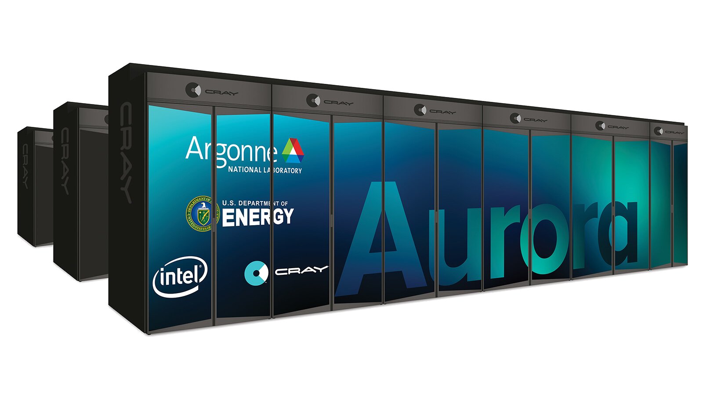
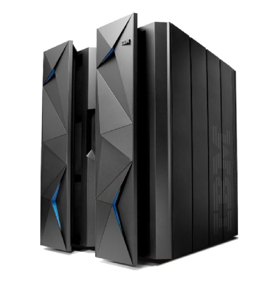
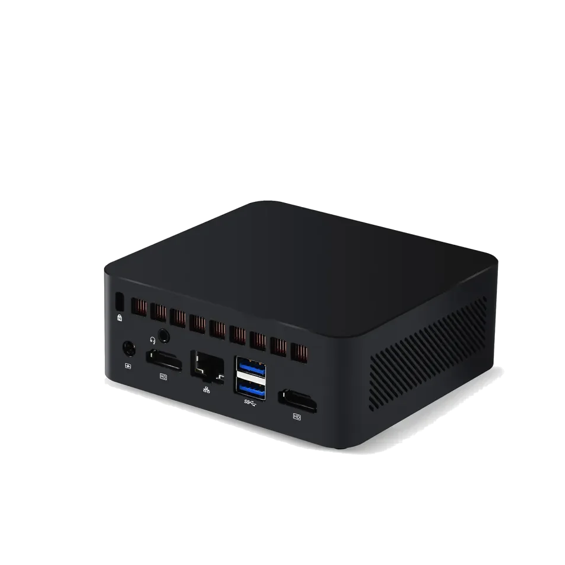
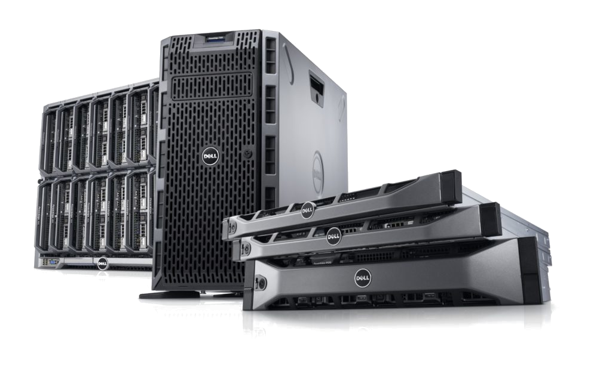

PORTFOLIO NO.6
A Comparative Study on Different Types of Computers
1. Supercomputers
- Aurora: Equipped with Intel Xeon CPUs and GPUs, supercomputers like Aurora achieve speeds of 1.012 exaflops and perform quintillions of calculations per second. These systems are vital for advanced scientific simulations, AI, and climate modeling but consume high energy (60 MW).
2. Mainframe Computers
- IBM z16: Known for reliability and scalability, mainframe computers handle large-scale financial transactions and data processing with energy-efficient configurations, consuming 6,000–10,000 W.
3. Minicomputers
- HP Mini 110: Designed for small-scale tasks, these compact computers provide basic functionality with low energy consumption (18–30 W), making them ideal for small businesses and educational use.
4. Servers
- HPE ProLiant DL380 Gen10: These systems support web hosting, databases, and enterprise applications. With scalable memory and processing power, their energy usage ranges from 500–1,200 W depending on configuration.
5. Workstations
- Dell Precision 5820: Built for professional tasks like CAD and video editing, workstations offer high processing power and memory, consuming 500–950 W during intensive operations.
6. Microcomputers
- Raspberry Pi 4: A compact and affordable computing solution, microcomputers are perfect for educational projects and IoT applications, consuming only 5–7 W of power.
Comparison Table
| Type of Computer | CPU | Memory | Speed | Energy Consumption | Usage |
|---|---|---|---|---|---|
| Supercomputer | Intel Xeon | Exabyte scale | 1.012 exaflops | 60 MW | Scientific Research, Climate Modeling |
| Mainframe | IBM Telum | TB-scale | 5.2 GHz | 6,000–10,000 W | Banking, Enterprise |
| Minicomputer | Intel Atom | Up to 2 GB | 1.33 GHz | 18–30 W | Small Businesses, Education |
| Server | Intel Xeon | Up to 3 TB | Up to 3.1 GHz | 500–1,200 W | Web Hosting, Databases |
| Workstation | Intel Xeon | Up to 128 GB | Up to 4.5 GHz | 500–950 W | CAD, Video Editing |
| Microcomputer | Broadcom Cortex-A72 | Up to 8 GB | 1.5 GHz | 5–7 W | IoT, Education |
The table highlights various types of computers categorized by their functionality and use cases, namely Supercomputer, Mainframe Computer, Minicomputer, Server, Workstations, and Microcomputers. It provides a detailed comparison of their key specifications, including CPU, memory, processing speed, and power consumption, as well as their practical applications.
1. Supercomputer (Aurora):
Aurora represents the pinnacle of computational power, specifically designed for highly complex tasks such as climate modeling and scientific simulations. Its multicore processors and GPU configurations ensure an unmatched processing speed, with energy consumption reaching around 60 MW. This showcases the trade-off between extreme performance and high energy usage.
2. Mainframe Computer (IBM z16):
The IBM z16 mainframe is a highly reliable system used in banking and large-scale enterprise applications. With energy consumption between 6,000 W and 10,000 W, it balances power efficiency with massive data-handling capabilities, including robust transaction processing and large memory capacity. Its modular design and scalability are essential for managing critical workloads.
3. Minicomputer (HP Mini 110):
The HP Mini 110 is a compact system with limited processing power and memory, designed for basic applications such as small-scale data management or education. Its energy consumption, averaging around 18–30 W, makes it an ecofriendly choice for users with minimal computing needs. However, it lacks the capability to perform resource-intensive tasks.
4. Server (HPE ProLiant DL380 Gen10):
Servers like the HPE ProLiant DL380 Gen10 are engineered to handle multiple simultaneous requests, making them ideal for hosting websites, managing databases, and cloud applications. With power consumption ranging from 500 W to 1,200 W, these systems feature multi-core CPUs and expandable memory, ensuring scalability and high availability.
5. Workstation (Dell Precision 5820 Tower):
Workstations are tailored for professionals requiring high performance for tasks such as 3D rendering, CAD, and video editing. The Dell Precision 5820 Tower, consuming 500–950 W, provides powerful CPUs and GPUs, large memory, and advanced cooling solutions. Its performance bridges the gap between personal computers and high-end servers.
6. Microcomputer (Raspberry Pi 4):
The Raspberry Pi 4 demonstrates the versatility of microcomputers. With energy consumption as low as 5–7 W, it is ideal for projects requiring low power, such as IoT, education, or lightweight server hosting. Its limited processing speed and memory make it unsuitable for heavy computing, but its affordability and size make it highly accessible.
Comparison Table
| Type of Computer | Sample Image | Descriptions | Usage |
|---|---|---|---|
| Supercomputer |  | A supercomputer is a powerful computing system designed for processing vast amounts of data and performing complex calculations at extremely high speeds. They are typically used in fields such as climate research, scientific simulations, and artificial intelligence to tackle tasks that require significant computational resources | Weather Forecasting, Scientific Research, Artificial Intelligence, Pharmaceutical, Developments, and Aerospace Engineering |
| Mainframe Computers |  | Mainframe computers are powerful, largescale computing systems designed to handle and process vast amounts of data quickly and reliably. Their robust security, high availability, and ability to support multiple users simultaneously make them indispensable for organizations that require consistent uptime and scalability. | Banking, Finance, Transaction processing, enterprise resource planning (ERP), and large-scale database management |
| Mini Computers |  | A mini computer, often referred to as a minicomputer, is a mid -sized computing system that bridges the gap between mainframes and personal computers, designed to support multiple users and handle substantial processing tasks. Typically compact, it offers robust computing power with a combination of multitasking capabilities and cost -effectiveness, making it suitable for both small to medium -sized businesses and research environments. | Mini computers are commonly used for managing data - intensive applications, such as database management, scientific simulations, and industrial automation, where they perform tasks that require more resources than microcomputers can provide but do not necessitate the scale of a mainframe |
| Server |  | A server is a powerful computer or system that provides data, resources, services, or programs to other computers, known as clients, over a network. It can manage multiple requests simultaneously and is essential for running applications, hosting websites, and securely storing data. | Web Hosting, Data Storage, Application Hosting, Email Services, and File Sharing |
The table outlines the description and usage of six computer types, emphasizing their roles in various fields:
1. Supercomputer (Aurora)
Description: Extremely powerful and designed for high-performance tasks like simulations and scientific research.
Usage: Used in weather forecasting, scientific experiments, and complex modeling.
2. Mainframe Computer (IBM z16)
Description: Reliable, large-scale systems for handling vast amounts of data and transactions.
Usage: Commonly used in banking, healthcare, and government operations.
3. Minicomputer (HP Mini 110):
Description: Compact and mid-tier in performance, suited for moderate computing needs.
Usage: Used in small businesses, manufacturing control, and educational purposes
4. Server (HPE ProLiant DL380 Gen10):
Optimized for managing multiple client requests with high availability.
Usage: Essential for web hosting, database management, and enterprise networks.
5. Workstation (Dell Precision 5820 Tower):
Description: High-performance systems designed for professionals requiring intensive computational power.
Usage: Used in 3D rendering, CAD, and multimedia production.
6. Microcomputer (Raspberry Pi 4):
Description: Small, cost-effective, and energy-efficient systems for lightweight tasks.
Usage: Ideal for IoT projects, learning programming, and basic computing tasks.
Mini Computer vs. Micro Computer vs. Workstation vs. Server
Mini Computer
- Processing Speed: Moderate, using lower-end CPUs like Intel Atom (1–2 GHz).
- Memory Capacity: Limited to 1–4 GB RAM, suitable for lightweight applications.
- Power Consumption: Very low (18–30 W), making it energy-efficient.
- Usage: Ideal for small businesses or labs handling simple tasks.
Micro Computer
- Processing Speed: Relatively slow, with single-core or low-powered CPUs like ARM Cortex (1.5 GHz).
- Memory Capacity: Up to 8 GB RAM, higher than mini computers but less than workstations or servers.
- Power Consumption: Extremely low (5–7 W), suitable for IoT or low-power tasks.
- Usage: Commonly used in education, prototyping, and lightweight web servers.
Workstation
- Processing Speed: High, with multi-core CPUs like Intel Xeon (3–4 GHz).
- Memory Capacity: Large, ranging from 16 GB to 512 GB RAM.
- Power Consumption: Higher (500–950 W), due to advanced components.
- Usage: Designed for professionals in 3D rendering, CAD, and video editing.
Server
- Processing Speed: Extremely high, with multi-core CPUs like Intel Xeon (up to 3.7 GHz).
- Memory Capacity: Massive, supporting configurations with 1 TB or more RAM.
- Power Consumption: Very high (500–1,200 W), depending on workload.
- Usage: Essential for hosting websites, managing databases, and enterprise applications.